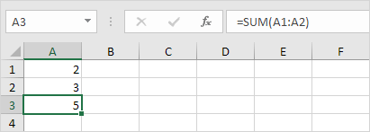
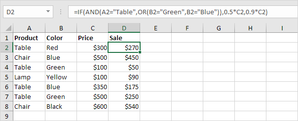
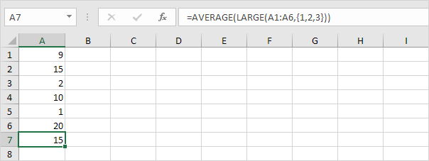
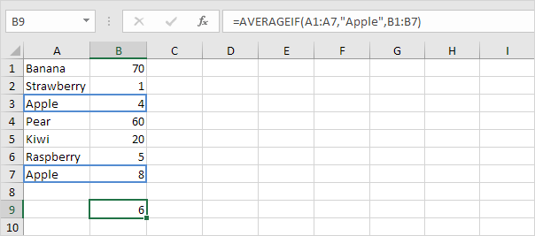
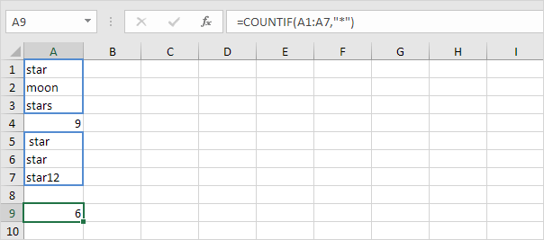
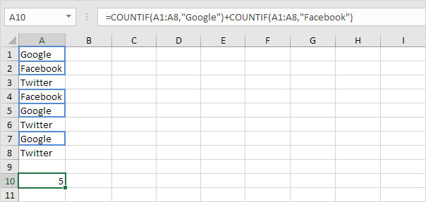
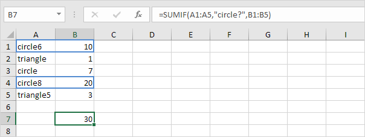
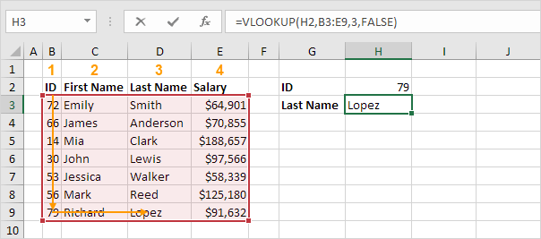
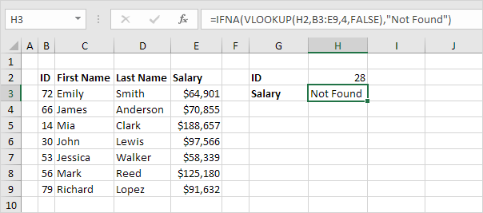
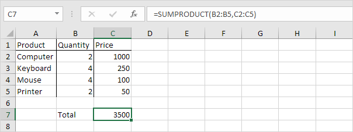

Rumus dan Fungsi
Masukkan Rumus | Mengedit Rumus | Prioritas Operator | Salin/Tempel Rumus | Sisipkan Fungsi
Sebuah rumus adalah ekspresi yang menghitung nilai sel. Fungsi adalah rumus yang telah ditentukan sebelumnya dan sudah tersedia di Excel. Misalnya, sel A3 di bawah ini berisi rumus yang menambahkan nilai sel A2 ke nilai sel A1.
Misalnya, sel A3 di bawah ini berisi fungsi SUM yang menghitung jumlah Range A1:A2.

Masukkan Formula
Untuk memasukkan rumus, jalankan langkah-langkah berikut.
Misalnya, ketikkan rumus A1+A2.
Tip: daripada mengetik A1 dan A2, cukup pilih sel A1 dan sel A2.
Ubah nilai sel A1 menjadi 3.

Excel secara otomatis menghitung ulang nilai sel A3. Ini adalah salah satu fitur Excel yang paling kuat!
Mengedit Formula
Saat Anda memilih sel, Excel memperlihatkan nilai atau rumus sel di bilah rumus.

Untuk mengedit rumus, klik di bilah rumus dan ubah rumus.

Tekan Enter.

Prioritas Operator
Excel menggunakan urutan default di mana perhitungan terjadi. Jika bagian dari rumus ada dalam tanda kurung, bagian itu akan dihitung terlebih dahulu. Kemudian melakukan perhitungan perkalian atau pembagian. Setelah ini selesai, Excel akan menambah dan mengurangi sisa rumus Anda. Lihat contoh di bawah ini.

Pertama, Excel melakukan perkalian (A1 * A2). Selanjutnya, Excel menambahkan nilai sel A3 ke hasil ini.
Contoh lain,

Pertama, Excel menghitung bagian dalam tanda kurung (A2+A3). Selanjutnya, hasil ini dikalikan dengan nilai sel A1.
Salin/Tempel Rumus
Saat Anda menyalin rumus, Excel secara otomatis menyesuaikan referensi sel untuk setiap sel baru tempat rumus disalin. Untuk memahaminya, lakukan langkah-langkah berikut.
Masukkan rumus yang ditunjukkan di bawah ini ke dalam sel A4.

Pilih sel A4, klik kanan, lalu klik Salin (atau tekan CTRL + c)...

... selanjutnya, pilih sel B4, klik kanan, lalu klik Tempel di bawah 'Opsi Tempel:' (atau tekan CTRL + v).

Anda juga dapat menyeret rumus ke sel B4. Pilih sel A4, klik di sudut kanan bawah sel A4 dan seret ke sel B4. Ini jauh lebih mudah dan memberikan hasil yang sama persis!

Hasil. Rumus di sel B4 mereferensikan nilai di kolom B.

Sisipkan Fungsi
Setiap fungsi memiliki struktur yang sama. Misalnya, SUM(A1:A4). Nama fungsi ini adalah SUM. Bagian antara tanda kurung (argumen) berarti kami memberikan Excel Range A1:A4 sebagai input. Fungsi ini menambahkan nilai dalam sel A1, A2, A3 dan A4. Tidak mudah untuk mengingat fungsi dan argumen mana yang digunakan untuk setiap tugas. Untungnya, fitur Sisipkan Fungsi di Excel membantu Anda dalam hal ini.
Untuk menyisipkan fungsi, jalankan langkah-langkah berikut.
Klik tombol Sisipkan Fungsi.

Kotak dialog 'Sisipkan Fungsi' muncul.
Cari fungsi atau pilih fungsi dari kategori. Misalnya, pilih COUNTIF dari kategori Statistik.

Klik Oke.
Kotak dialog 'Argumen Fungsi' muncul.
Klik Oke.
Hasil. Fungsi COUNTIF menghitung jumlah sel yang lebih besar dari 5.

Catatan: daripada menggunakan fitur Sisipkan Fungsi, cukup ketik = COUNTIF(A1:C2,">5"). Saat Anda tiba di: =COUNTIF( alih-alih mengetik A1:C2, cukup pilih Range A1:C2.
Fungsi yang Paling Banyak Digunakan
1. COUNT
Untuk menghitung jumlah sel yang berisi angka, gunakan fungsi COUNT di Excel.

Catatan: gunakan COUNTA untuk menghitung semua sel yang tidak kosong. COUNTA adalah singkatan dari hitung semua.
2. SUM
Untuk menjumlahkan Range sel, gunakan fungsi SUM di Excel. Fungsi SUM di bawah ini menjumlahkan semua nilai di kolom A.


Catatan: Anda juga dapat menggunakan fungsi SUM untuk menjumlahkan seluruh baris. Misalnya, =SUM(5:5) menjumlahkan semua nilai di baris ke-5.
3. IF
Fungsi IF memeriksa apakah suatu kondisi terpenuhi, dan mengembalikan satu nilai jika benar dan nilai lain jika salah.

Penjelasan: jika skor lebih besar dari atau sama dengan 60, Fungsi IF yang ditunjukkan di atas mengembalikan Pass (Lulus), jika tidak mengembalikan maka Fail (Gagal). Untuk menyalin rumus ini dengan cepat ke sel lain, klik di sudut kanan bawah sel C2 dan seret ke bawah ke sel C6.
Contoh IF Sederhana |
And/Or Kriteria | IF Bersarang | Lebih lanjut mengenai IF
fungsi IF adalah salah satu fungsi yang paling banyak digunakan di Excel . Halaman ini berisi banyak contoh IF yang mudah diikuti. Contoh IF Sederhana fungsi IF memeriksa apakah suatu kondisi terpenuhi, dan mengembalikan satu nilai jika benar dan nilai lain jika salah. 1a. Misalnya, lihat fungsi IF di sel B2 di bawah ini. Penjelasan: jika harga lebih besar dari 500, fungsi IF mengembalikan High, jika tidak mengembalikan Low. 1b. fungsi IF berikut menghasilkan hasil yang sama persis. Catatan: Anda dapat menggunakan operator perbandingan berikut : = (sama dengan), > (lebih besar dari), < (kurang dari), >= (lebih besar atau sama dengan),
<= (kurang dari atau sama dengan) dan <> (tidak sebanding dengan). 2. Selalu sertakan teks dalam tanda kutip ganda. 3a. Rumus di bawah ini menghitung kemajuan antara dua titik waktu. 3b. Anda dapat menggunakan fungsi IF untuk menampilkan string kosong jika nilai akhir belum dimasukkan (lihat baris 5). Penjelasan: jika nilai akhir tidak kosong (<> berarti tidak sama dengan), fungsi IF menghitung kemajuan antara nilai awal dan akhir, selain itu akan menampilkan string kosong (dua tanda kutip ganda tanpa apa pun di antaranya). And/Or Kriteria Gunakan fungsi IF dalam kombinasi dengan fungsi AND dan
fungsi OR dan jadilah ahli Excel. 1. Sebagai contoh, perhatikan fungsi IF pada sel D2 di bawah ini. Penjelasan: fungsi AND mengembalikan TRUE
jika skor pertama lebih besar atau sama dengan 60 dan skor kedua lebih besar atau sama dengan 90, selain itu mengembalikan
FALSE. Jika TRUE
, fungsi IF mengembalikan Pass, jika FALSE, fungsi IF mengembalikan Fail. 2. Sebagai contoh, perhatikan fungsi IF pada sel D2 di bawah ini. Penjelasan: fungsi OR mengembalikan TRUE
jika setidaknya satu skor lebih besar dari atau sama dengan 60, selain itu mengembalikan FALSE. Jika TRUE
, fungsi IF mengembalikan Pass, jika FALSE, fungsi IF mengembalikan Fail. 3. Sebagai contoh, perhatikan fungsi IF pada sel D2 di bawah ini.  Penjelasan: fungsi AND di atas memiliki dua argumen yang dipisahkan oleh koma (Tabel, Hijau atau Biru). Fungsi AND mengembalikan TRUE
jika Produk sama dengan "Tabel" dan Warna sama dengan "Hijau" atau "Biru". Jika TRUE
, fungsi IF mengurangi harga sebesar 50%, jika
FALSE, fungsi IF mengurangi harga sebesar 10%. IF Bersarang (Nested IF) Fungsi IF di Excel bisa disarangkan, saat Anda memiliki beberapa kondisi yang harus dipenuhi. Nilai
FALSE digantikan oleh fungsi IF lain untuk melakukan pengujian lebih lanjut. 1. Misalnya, lihat rumus IF Bersarang (Nested IF)
di sel C2 di bawah ini.
Penjelasan: jika skor sama dengan 1, rumus IF Bersarang (Nested IF)
menghasilkan Buruk, jika skor sama dengan 2, rumus IF Bersarang (Nested IF)
menghasilkan Baik, jika skor sama dengan 3, rumus IF Bersarang (Nested IF)
menghasilkan Sangat Baik, jika tidak maka mengembalikan Tidak Valid. Jika Anda memiliki Excel 2016 atau lebih baru, cukup gunakan fungsi IFS . 2. Misalnya, lihat rumus IF Bersarang (Nested IF)
di sel C2 di bawah ini.
Penjelasan: jika skor kurang dari 60, rumus IF Bersarang (Nested IF)
mengembalikan F, jika skor lebih besar atau sama dengan 60 dan kurang dari 70, rumus mengembalikan D, jika skor lebih besar atau sama dengan 70 dan kurang dari 80, rumus mengembalikan C, jika
skor lebih besar atau sama dengan 80 dan kurang dari 90, rumus mengembalikan B, selain itu mengembalikan A.
Lebih lanjut mengenai IF fungsi IF adalah fungsi yang bagus. Mari kita lihat beberapa contoh keren lainnya. 1. Misalnya, gunakan IF dan AND untuk menguji apakah suatu nilai berada di antara dua angka.
Penjelasan: fungsi AND mengembalikan TRUE
jika orang tersebut lebih tua dari 12 tahun dan lebih muda dari 20 tahun, selain itu mengembalikan
FALSE. Jika
TRUE
, fungsi IF mengembalikan Ya, jika FALSE, fungsi
IF mengembalikan Tidak. 2. Anda dapat menggabungkan IF dengan AVERAGE, SUM dan fungsi Excel lainnya. Langit adalah batasnya!
Penjelasan: fungsi AND mengembalikan TRUE
jika nilai input lebih besar dari 100 dan rata-rata nilai dalam Range bernama Data1 lebih besar dari 100, selain itu mengembalikan
FALSE. Jika TRUE
, fungsi IF mengembalikan jumlah Data2, jika
FALSE, fungsi
IF mengembalikan 0. Bingung? Anda selalu dapat menggunakan alat Evaluasi Rumus untuk menelusuri rumus JIKA Anda. Alat Excel ini membantu Anda memahami rumus. 3. Misalnya, pilih sel G3 di atas. 4. Pada tab Rumus, dalam grup Audit Rumus, klik Evaluasi Rumus.
5. Klik Evaluasi beberapa kali. Catatan: coba sendiri. Unduh file Excel dan pilih salah satu rumus IF yang dijelaskan di halaman ini. Anda dapat menggunakan alat ini untuk menelusuri semua jenis rumus.
Selengkapnya Fungsi IF


4. AVERAGE (rata-rata)
Untuk menghitung rata-rata sekelompok angka, gunakan fungsi AVERAGE (tidak ada ilmu roket di sini). Rumus di bawah ini menghitung rata-rata dari 3 angka teratas dalam Range A1:A6.

Penjelasan: fungsi LARGE mengembalikan konstanta array {20,15,10}. Konstanta array ini dig class="sub-sub-materi"unakan sebagai argumen untuk fungsi, memberikan hasil 15.
AVERAGE |
AVERAGEA | AVERAGE Top 3 | AVERAGEIF |
Weighted AVERAGE | Moving AVERAGE Fungsi AVERAGE di Excel menghitung rata-rata (rata-rata aritmatika) dari sekelompok angka. Fungsi
AVERAGE mengabaikan nilai logika, sel kosong, dan sel yang berisi teks. AVERAGE Alih-alih menggunakan fungsi AVERAGE, gunakan SUM dan COUNT. 1. Misalnya, fungsi AVERAGE di bawah ini menghitung rata - rata angka dalam sel A1 hingga A3. 2. Rumus di bawah ini menghasilkan hasil yang sama persis. 3. Fungsi AVERAGE berikut menghitung rata-rata angka dalam sel A1 sampai A3 dan angka 8. 4. Fungsi AVERAGE mengabaikan nilai logika (TRUE
atau FALSE), sel kosong dan sel yang berisi teks.
AVERAGEA Fungsi AVERAGEA juga mengembalikan rata-rata (rata-rata aritmatika) dari sekelompok angka. Namun, nilai logika FALSE dan sel yang berisi teks bernilai 0 dan nilai logika TRUE
bernilai 1. Fungsi AVERAGEA juga mengabaikan sel kosong. 1. Sebagai contoh, perhatikan fungsi AVERAGEA di bawah ini. 2. Anda dapat menggunakan fungsi AVERAGE normal untuk memeriksa hasil ini. AVERAGE Top 3 (AVERAGE 3 Teratas) Gunakan AVERAGE dan LARGE di Excel untuk menghitung rata-rata dari 3 angka teratas dalam kumpulan data.
1. Pertama, fungsi AVERAGE di bawah ini menghitung rata-rata angka dalam sel A1 hingga
A6. 2. Misalnya, untuk mencari bilangan terbesar ketiga, gunakan fungsi LARGE berikut. 3. Rumus di bawah ini menghitung rata-rata dari 3 angka teratas.  Penjelasan: fungsi LARGE mengembalikan konstanta array {20,15,10}. Konstanta array ini digunakan sebagai argumen untuk fungsi AVERAGE, memberikan hasil 15. AVERAGEIF Untuk menghitung rata-rata sel yang memenuhi satu kriteria, gunakan
fungsi AVERAGEIF di Excel.  Weighted Average (Rata-rata Tertimbang) Untuk menghitung rata-rata
tertimbang di Excel, gunakan SUMPRODUCT dan SUM. Moving Average (Rata-Rata Bergerak) Gunakan Analysis Toolpak untuk menghitung rata-rata bergerak dari deret waktu di Excel. Catatan: rata-rata bergerak digunakan untuk menghaluskan ketidakteraturan (puncak dan lembah) untuk mengenali tren dengan mudah.
Selengkapnya Fungsi AVERAGE


5. COUNTIF
Fungsi COUNTIF di bawah ini menghitung jumlah sel yang berisi persis bintang + serangkaian karakter nol atau lebih.

Penjelasan: tanda bintang (*) cocok dengan serangkaian karakter nol atau lebih. Kunjungi halaman kami tentang fungsi COUNTIF untuk informasi dan contoh lebih lanjut.
COUNTIF Kriteria Numerik | Trik Teks | Hitung
Boolean | Count Errors | And Kriteria | Or Kriteria | Lebih lanjut tentang COUNTIF |
Count Magic
Fungsi COUNTIF yang kuat di Excel menghitung sel berdasarkan satu kriteria. Halaman ini berisi banyak contoh COUNTIF yang mudah diikuti.
Kriteria Numerik Gunakan fungsi COUNTIF di Excel untuk menghitung sel yang sama dengan nilai, menghitung sel yang lebih besar atau sama dengan nilai, dll. 1. Fungsi COUNTIF di bawah ini menghitung jumlah sel yang sama dengan 20. 2. Fungsi COUNTIF berikut memberikan hasil yang sama persis. 3. Fungsi COUNTIF di bawah ini menghitung jumlah sel yang lebih besar atau sama dengan 10. 4. Fungsi COUNTIF berikut memberikan hasil yang sama persis. Penjelasan: operator & menggabungkan simbol 'lebih besar dari atau sama dengan
(greater than or equal to)' dan nilai di sel C1. 5. Fungsi COUNTIF di bawah ini menghitung jumlah sel yang
tidak sama dengan 7. 6. Fungsi COUNTIF di bawah ini menghitung jumlah sel yang sama dengan 3 atau 7.
Trik Teks Gunakan fungsi COUNTIF di Excel dan beberapa trik untuk menghitung sel yang berisi teks tertentu. Selalu sertakan teks dalam tanda kutip ganda. 1. Fungsi COUNTIF di bawah ini menghitung jumlah sel yang berisi persis bintang. 2. Fungsi COUNTIF di bawah ini menghitung jumlah sel yang berisi persis bintang + 1 karakter. Tanda tanya (?) cocok dengan tepat satu karakter. 3. Fungsi COUNTIF di bawah ini menghitung jumlah sel yang berisi persis bintang + serangkaian karakter nol atau lebih. Tanda bintang (*) cocok dengan serangkaian karakter nol atau lebih. 4. Fungsi COUNTIF di bawah ini menghitung jumlah sel yang mengandung bintang dengan cara apa pun. 5. Fungsi COUNTIF di bawah ini menghitung jumlah sel yang berisi teks. 
Hitung Boolean Gunakan fungsi COUNTIF di Excel untuk menghitung nilai Boolean (TRUE atau FALSE).
1. Fungsi COUNTIF di bawah ini menghitung jumlah sel yang berisi Boolean TRUE. 2. Fungsi COUNTIF di bawah ini menghitung jumlah sel yang berisi Boolean FALSE.
Hitung Kesalahan Gunakan fungsi COUNTIF di Excel untuk menghitung kesalahan tertentu.
1. Fungsi COUNTIF di bawah ini menghitung jumlah sel yang berisi #NAME? kesalahan. 2. Rumus array di bawah ini menghitung jumlah total kesalahan dalam Range sel. Catatan: selesaikan rumus array dengan menekan
Ctrl+Shift+Enter. Excel menambahkan kurung kurawal {}. Kunjungi halaman kami tentang
Menghitung
Kesalahan untuk petunjuk terperinci tentang cara membuat rumus array ini.
Dan Kriteria Menghitung dengan kriteria Dan di Excel itu mudah. Fungsi COUNTIFS (dengan huruf S di akhir) di Excel menghitung sel berdasarkan dua atau lebih kriteria. 1. Misalnya, untuk menghitung jumlah baris yang berisi Google
dan Stanford, cukup gunakan fungsi COUNTIFS.
Atau Kriteria Menghitung dengan kriteria Or di Excel bisa jadi rumit. 1. Fungsi COUNTIF di bawah ini menghitung jumlah sel yang berisi Google atau Facebook (satu kolom). Tidak ada ilmu roket sejauh ini.  2. Namun, jika Anda ingin menghitung jumlah baris yang berisi Google atau Stanford (dua kolom), Anda tidak bisa begitu saja menggunakan fungsi COUNTIF dua kali (lihat gambar di bawah). Catatan: baris yang berisi Google dan Stanford dihitung dua kali, tetapi seharusnya hanya dihitung sekali. 4 adalah jawaban yang kita cari.
3. Rumus array di bawah ini berhasil. Catatan: selesaikan rumus array dengan menekan
Ctrl+Shift+Enter. Excel menambahkan kurung kurawal {}. Kunjungi halaman kami tentang
Menghitung
dengan Atau Kriteria untuk instruksi terperinci tentang cara membuat rumus array ini.
Lebih lanjut tentang COUNTIF Fungsi COUNTIF adalah fungsi yang hebat. Mari kita lihat beberapa contoh keren lainnya. 1. Fungsi COUNTIF di bawah ini menggunakan Range bernama . Range bernama Ages mengacu pada Range A1:A6. 2. Fungsi COUNTIF di bawah ini menghitung jumlah sel yang kurang dari rata-rata usia (32,2). 3. Untuk menghitung sel di antara dua angka, gunakan fungsi COUNTIFS (dengan huruf S di akhir). 4. Gunakan fungsi COUNTIF untuk menghitung berapa kali setiap nilai muncul dalam Range bernama Ages.
Catatan: sel B2 berisi rumus =COUNTIF(Usia,A2), sel B3 =
COUNTIF(Usia,A3), dll. 5. Tambahkan fungsi IF untuk menemukan duplikatnya.
Tip: gunakan COUNTIF dan pemformatan bersyarat untuk menemukan dan menyorot
duplikat di Excel.
Count Magic Fungsi COUNTIF tidak dapat menghitung berapa kali kata tertentu muncul dalam sel atau Range sel. Yang kita butuhkan hanyalah sedikit sihir! 1. Rumus di bawah ini menghitung berapa kali kata "anjing" muncul di sel A1. 2. Rumus di bawah ini menghitung berapa kali kata "anjing" muncul dalam Range A1:A2. Catatan: kunjungi halaman kami tentang menghitung kata untuk mempelajari lebih lanjut tentang rumus ini.
Selengkapnya Fungsi COUNTIF


6. SUMIF
Fungsi SUMIF di bawah ini menjumlahkan nilai dalam Range B1:B5 jika sel yang sesuai dalam Range A1:A5 berisi persis lingkaran + 1 karakter.

Penjelasan: tanda tanya (?) cocok dengan tepat satu karakter. Kunjungi halaman kami tentang fungsi SUMIF untuk informasi dan contoh lebih lanjut.
Sumif Kriteria Numerik | Kriteria Teks | Kriteria Tanggal | Dan Kriteria | Atau Kriteria Fungsi SUMIF yang kuat di Excel menjumlahkan sel berdasarkan satu kriteria. Halaman ini berisi banyak contoh SUMIF yang mudah diikuti. Kriteria Numerik Gunakan fungsi SUMIF di Excel untuk menjumlahkan sel berdasarkan angka yang memenuhi kriteria tertentu.
1. Fungsi SUMIF di bawah (dua argumen) menjumlahkan nilai dalam Range A1:A5 yang kurang dari atau sama dengan 10. 2. Fungsi SUMIF berikut memberikan hasil yang sama persis. Operator & menggabungkan simbol 'kurang dari atau sama dengan' dan nilai dalam sel C1. 3. Fungsi SUMIF di bawah ini (tiga argumen, argumen terakhir adalah Range yang akan dijumlahkan) menjumlahkan nilai dalam Range B1:B5 jika sel terkait dalam Range A1:A5 berisi nilai 25. 4. Fungsi SUMIF berikut memberikan hasil yang sama persis (argumen kedua mengacu pada sel D1). Kriteria Teks Gunakan fungsi SUMIF di Excel untuk menjumlahkan sel berdasarkan string teks yang memenuhi kriteria tertentu. Selalu sertakan teks dalam tanda kutip ganda. 1. Fungsi SUMIF di bawah ini menjumlahkan nilai dalam Range B1:B5 jika sel yang sesuai dalam Range A1:A5 berisi lingkaran persis. 2. Fungsi SUMIF di bawah ini menjumlahkan nilai dalam Range B1:B5 jika sel terkait dalam Range A1:A5
tidak berisi segitiga sama persis. 3. Fungsi SUMIF di bawah ini menjumlahkan nilai dalam Range B1:B5 jika sel yang sesuai dalam Range A1:A5 berisi persis lingkaran + 1 karakter. Tanda tanya (?) cocok dengan tepat satu karakter. 4. Fungsi SUMIF di bawah ini menjumlahkan nilai dalam Range B1:B5 jika sel terkait dalam Range A1:A5 berisi rangkaian nol atau lebih karakter + file. Tanda bintang (*) cocok dengan serangkaian karakter nol atau lebih. 5. Fungsi SUMIF di bawah jumlah nilai dalam Range B1:B5 jika sel yang sesuai dalam Range A1:A5 berisi segitiga atau lingkaran8 yang tepat. Kriteria Tanggal Gunakan fungsi SUMIF di Excel untuk menjumlahkan sel berdasarkan tanggal yang memenuhi kriteria tertentu.
1. Fungsi SUMIF di bawah ini menjumlahkan penjualan setelah 20 Januari 2018. Catatan: fungsi DATE di Excel menerima tiga argumen: tahun, bulan, dan hari. 2. Fungsi SUMIF di bawah ini menjumlahkan penjualan hari ini. Catatan: hari ini adalah 3 Agustus 2018. 3. Fungsi SUMIFS (dengan huruf S di akhir) di bawah ini menjumlahkan penjualan antara dua tanggal. Catatan: fungsi SUMIFS di Excel menjumlahkan sel berdasarkan dua atau lebih kriteria (argumen pertama adalah Range yang akan dijumlahkan, diikuti oleh dua atau lebih pasangan Range/kriteria). Sesuaikan tanggal untuk menjumlahkan penjualan
pada bulan, tahun, dll. Dan Kriteria Menjumlahkan dengan kriteria Dan di Excel itu mudah. 1. Misalnya, untuk menjumlahkan sel yang memenuhi kriteria berikut: Google dan Stanford (dua Range kriteria), cukup gunakan fungsi SUMIFS (dengan huruf S di akhir). Catatan: ingat, saat menggunakan fungsi SUMIFS, argumen pertama adalah Range yang akan dijumlahkan, diikuti oleh dua atau lebih pasangan Range/kriteria. Atau Kriteria Menjumlahkan dengan kriteria Or di Excel bisa jadi rumit. 1. Rumus di bawah ini menjumlahkan sel yang memenuhi kriteria berikut: Google atau Facebook (satu Range kriteria). Tidak ada ilmu roket sejauh ini. 2. Namun, jika Anda ingin menjumlahkan sel yang memenuhi kriteria berikut: Google atau Stanford (dua Range kriteria), Anda tidak bisa begitu saja menggunakan fungsi SUMIF dua kali (lihat gambar di bawah).
Catatan: sel yang memenuhi kriteria Google dan Stanford ditambahkan dua kali, tetapi hanya boleh ditambahkan satu kali. 10 adalah jawaban yang kita cari. 3. Rumus array di bawah ini berhasil. Catatan: selesaikan rumus array dengan menekan
Ctrl+Shift+Enter. Excel menambahkan kurung kurawal {}. Kunjungi halaman kami tentang Menjumlahkan dengan
Atau Kriteria untuk instruksi terperinci tentang cara membuat rumus array ini.
Selengkapnya Fungsi SUMIF


7. VLOOKUP
Fungsi VLOOKUP di bawah ini mencari nilai 53 (argumen pertama) di kolom paling kiri dari tabel merah (argumen kedua). Nilai 4 (argumen ketiga) memberi tahu fungsi VLOOKUP untuk mengembalikan nilai pada baris yang sama dari kolom keempat tabel merah.

Catatan: kunjungi halaman kami tentang fungsi VLOOKUP untuk mempelajari lebih lanjut tentang fungsi Excel yang hebat ini.
VLOOKUP Pencocokan Tepat | Approximate Match | Vlookup
Looks Right | First Match | Vlookup is Case-insensitive | Beberapa Kriteria | #N/A Errors | Beberapa Tabel Pencarian | Index dan Match | Xlookup Fungsi VLOOKUP adalah salah satu fungsi yang paling populer di Excel. Halaman ini berisi banyak contoh
VLOOKUP yang mudah diikuti. Exact Match (Benar-benar cocok) Sebagian besar waktu Anda mencari kecocokan yang tepat saat Anda menggunakan fungsi VLOOKUP di Excel. Mari kita lihat argumen dari fungsi VLOOKUP. 1. Fungsi VLOOKUP di bawah ini mencari nilai 53 (argumen pertama) di kolom paling kiri tabel merah (argumen kedua). 2. Nilai 4 (argumen ketiga) memberitahu fungsi VLOOKUP untuk mengembalikan nilai pada baris yang sama dari kolom keempat tabel merah. Catatan: Boolean FALSE (argumen keempat) memberi tahu fungsi VLOOKUP untuk mengembalikan kecocokan yang sama persis. Jika fungsi VLOOKUP tidak dapat menemukan nilai 53 di kolom pertama, itu akan mengembalikan kesalahan
#N/A. 3. Ini contoh lain. Alih-alih mengembalikan gaji, fungsi VLOOKUP di bawah ini mengembalikan nama belakang (argumen ketiga disetel ke 3) dari ID 79.  Approximate Match (Perkiraan Kecocokan)
Mari kita lihat contoh fungsi VLOOKUP dalam mode pencocokan perkiraan (argumen keempat disetel ke
TRUE). 1. Fungsi VLOOKUP di bawah ini mencari nilai 85 (argumen pertama) di kolom paling kiri dari tabel merah (argumen kedua). Hanya ada satu masalah. Tidak ada nilai 85 di kolom pertama. 2. Untungnya, Boolean TRUE (argumen keempat) memberi tahu fungsi VLOOKUP untuk mengembalikan perkiraan kecocokan. Jika fungsi VLOOKUP tidak dapat menemukan nilai 85 di kolom pertama, itu akan mengembalikan nilai terbesar yang
lebih kecil dari 85. Dalam contoh ini, ini akan menjadi nilai 80. 3. Nilai 2 (argumen ketiga) memberitahu fungsi VLOOKUP untuk mengembalikan nilai pada baris yang sama dari kolom kedua tabel merah. Catatan: selalu urutkan kolom paling kiri dari tabel merah dalam urutan menaik jika Anda menggunakan fungsi VLOOKUP dalam mode pencocokan perkiraan (argumen keempat disetel ke
TRUE). Vlookup Looks Right (Vlookup Pencocokan ke
Kanan) Fungsi VLOOKUP selalu mencari nilai di kolom paling kiri dari tabel dan mengembalikan nilai yang sesuai dari kolom ke kanan. 1. Misalnya, fungsi VLOOKUP di bawah ini mencari nama depan dan mengembalikan nama belakang. 2. Jika Anda mengubah nomor indeks kolom (argumen ketiga) menjadi 3, fungsi VLOOKUP akan mencari nama depan dan mengembalikan gaji. Catatan: dalam contoh ini, fungsi VLOOKUP tidak dapat mencari nama depan dan mengembalikan ID. Fungsi VLOOKUP hanya melihat ke kanan. Jangan khawatir, Anda dapat menggunakan
INDEX dan MATCH di Excel untuk melakukan
pencarian kiri . First Match Jika kolom paling kiri dari tabel berisi duplikat, fungsi VLOOKUP cocok dengan instance pertama. Sebagai contoh, lihatlah fungsi VLOOKUP di bawah ini. Penjelasan: fungsi VLOOKUP mengembalikan gaji Mia Clark, bukan Mia Reed. Vlookup adalah Case-insensitive Fungsi VLOOKUP di Excel melakukan pencarian kasus-tidak sensitif. Misalnya, fungsi VLOOKUP di bawah ini mencari MIA (sel G2) di kolom paling kiri tabel. Penjelasan: Fungsi VLOOKUP bersifat case-insensitive sehingga mencari MIA atau Mia atau mia atau miA, dll. Akibatnya, fungsi VLOOKUP mengembalikan gaji Mia Clark (contoh pertama). Gunakan INDEX, MATCH, dan EXACT di Excel untuk melakukan
pencarian kasus-tidak sensitif.
Beberapa Kriteria Apakah Anda ingin mencari nilai berdasarkan beberapa kriteria? Gunakan INDEX dan MATCH di Excel untuk melakukan pencarian dua
kolom. Catatan: rumus array di atas mencari gaji James Clark, bukan James Smith, bukan James Anderson. #N/A Errors Jika fungsi VLOOKUP tidak dapat menemukan kecocokan, ia mengembalikan kesalahan #N/A. 1. Misalnya, fungsi VLOOKUP di bawah ini tidak dapat menemukan nilai 28 di kolom paling kiri. 2. Jika mau, Anda dapat menggunakan fungsi IFNA untuk mengganti kesalahan #N/A dengan pesan ramah.  Catatan: fungsi IFNA diperkenalkan di Excel 2013. Jika Anda menggunakan Excel 2010 atau Excel 2007, cukup ganti IFNA dengan IFERROR. Ingat, fungsi IFERROR juga menangkap kesalahan lain. Misalnya, #NAME? kesalahan jika Anda tidak sengaja
salah mengeja kata VLOOKUP. Beberapa Tabel Pencarian Saat menggunakan fungsi VLOOKUP di Excel, Anda dapat memiliki beberapa tabel pencarian. Anda dapat menggunakan fungsi IF untuk memeriksa apakah suatu kondisi terpenuhi, dan mengembalikan
satu tabel pencarian jika TRUE dan tabel pencarian lainnya jika FALSE. 1. Buat dua rentang bernama : Tabel1 dan Tabel2.
2. Pilih sel E4 dan masukkan fungsi VLOOKUP yang ditunjukkan di bawah ini. Penjelasan: bonus tergantung pada pasar (Inggris atau USA) dan jumlah penjualan. Argumen kedua dari fungsi VLOOKUP berhasil. Jika Inggris, fungsi VLOOKUP menggunakan Tabel1, jika AS, fungsi VLOOKUP menggunakan Tabel2.
Setel argumen keempat fungsi VLOOKUP ke TRUE untuk mengembalikan perkiraan kecocokan. 3. Tekan Enter. 4. Pilih sel E4, klik di sudut kanan bawah sel E4 dan seret ke bawah ke sel E10. Catatan: misalnya, Walker menerima bonus $1.500. Karena kami menggunakan rentang bernama, kami dapat dengan mudah menyalin fungsi VLOOKUP ini ke sel lain tanpa mengkhawatirkan referensi sel. Index and Match Alih-alih menggunakan VLOOKUP, gunakan INDEX dan MATCH. Untuk melakukan pencarian lanjutan, Anda memerlukan INDEX dan MATCH. Mungkin ini satu
langkah terlalu jauh untuk Anda pada tahap ini, tetapi ini menunjukkan kepada Anda salah satu dari banyak formula hebat lainnya yang ditawarkan Excel. Xlookup Jika Anda memiliki Excel 365, gunakan XLOOKUP, bukan VLOOKUP. Fungsi XLOOKUP lebih mudah digunakan dan memiliki beberapa keuntungan tambahan.
Selengkapnya Fungsi VLOOKUP


8. MIN
Untuk mencari nilai minimum, gunakan fungsi MIN. Ini sesederhana kedengarannya.

9. MAX
Untuk mencari nilai maksimum, gunakan fungsi MAX.

Catatan: kunjungi bab kami tentang fungsi statistik untuk mempelajari lebih lanjut tentang Excel dan Statistik.
10. SUMPRODUCT
Untuk menghitung jumlah produk dari angka yang sesuai dalam satu atau beberapa Range, gunakan fungsi SUMPRODUCT Excel yang kuat.

Penjelasan: fungsi SUMPRODUCT melakukan perhitungan ini: (2 * 1000) + (4 * 250) + (4 * 100) + (2 * 50) = 3500.
Bab
Count AND SUM
Logika
Referensi Sel
Tanggal Waktu
Teks
Pencarian & Referensi
Keuangan
Statistik
Bulat
Kesalahan Rumus
Rumus Array
Fungsi
Temukan bagaimana fungsi di Excel membantu Anda menghemat waktu. Jika Anda baru mengenal fungsi di Excel, kami menyarankan Anda untuk membaca pengantar kami tentang Rumus dan Fungsi terlebih dahulu.
Count AND SUM : Fungsi yang paling banyak digunakan di Excel adalah fungsi count dan SUM. Anda dapat menghitung dan menjumlahkan berdasarkan satu kriteria atau beberapa kriteria.
Logika : Pelajari cara menggunakan fungsi logika Excel, seperti IF, AND, OR dan NOT.
Referensi Sel : Referensi sel di Excel sangat penting. Pahami perbedaan antara referensi relatif, absolut, dan campuran, dan Anda sedang menuju kesuksesan.
Tanggal & Waktu : Untuk memasukkan tanggal, gunakan karakter "/" atau "-". Untuk memasukkan waktu, gunakan ":" (titik dua).
Teks : Excel memiliki banyak fungsi untuk ditawarkan dalam hal memanipulasi string teks.
Pencarian & Referensi : Pelajari semua tentang fungsi pencarian & referensi Excel, seperti VLOOKUP, HLOOKUP, MATCH, INDEX dan CHOOSE.
Financial: Bab ini menggambarkan fungsi keuangan Excel yang paling populer.
Statistik: Gambaran umum dari beberapa fungsi statistik yang sangat berguna di Excel.
Round: Bab ini menggambarkan tiga fungsi untuk membulatkan angka di Excel. ROUND, ROUNDUP dan ROUNDDOWN.
Rumus Kesalahan: Bab ini mengajarkan Anda bagaimana menangani beberapa kesalahan rumus umum.
Rumus Array: Bab ini membantu Anda memahami rumus array di Excel. Rumus array sel tunggal melakukan beberapa perhitungan dalam satu sel.